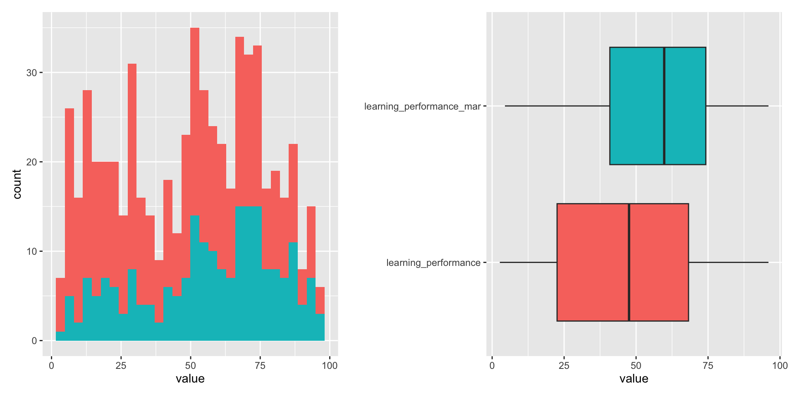

Week 3: Feature Engineering
recipess • Workflows • Leakage Safety • Explainability
ผศ.ดร.สิวะโชติ ศรีสุทธิยากร
2025-08-30
Part1 : บทนำ
อย่าลืมว่า modelling เป็นเพียงส่วนหนึ่งของกระบวนการทาง data science ทั้งหมด

https://www.tmwr.org/software-modeling.html#model-phases
Tidymodels core packages
rsample: general methods for resampling
recipes: unified interface to data preprocessing parsnip: unified interface to modeling
workflows: combine model blueprints and preprocessing recipes
dials: create tuning parameters
tune: hyperparameter tuning
broom: tidy model outputs
yardstick: model evaluation

ชุดข้อมูลตัวอย่าง
library(tidyverse)
library(tidymodels)
data <- read_csv("student_data.csv")
data <- data %>% mutate(student_id = 1:dim(data)[1], .before = everything())
glimpse(data, 80)Rows: 1,200
Columns: 21
$ student_id <int> 1, 2, 3, 4, 5, 6, 7, 8, 9, 10, 11, 12, 13, 14, …
$ age <dbl> 23, 22, 21, 20, 24, 24, 22, 21, 18, 18, 18, 22,…
$ years_study <dbl> 2, 2, 4, 2, 2, 3, 4, 2, 2, 1, 1, 3, 2, 5, 3, 3,…
$ major <chr> "Business", "Science", "Science", "Science", "E…
$ level <chr> "Undergraduate", "Undergraduate", "Undergraduat…
$ work_status <chr> NA, "Not Working", "Working", "Not Working", "N…
$ gpa <dbl> 0.88, 3.39, 2.27, 3.23, 3.33, 1.36, 4.00, 1.30,…
$ credits_per_term <dbl> 13, 15, 11, 11, 14, 10, 14, 19, 19, 20, 11, 12,…
$ withdrawal_count <dbl> 2, 0, 1, 0, 0, 4, 0, 1, 0, 2, 0, 1, 0, 0, 1, 0,…
$ failed_courses <dbl> 2, 0, 0, 0, 0, 2, 0, 0, 0, 2, 0, 0, 1, 1, 2, 0,…
$ scholarship_status <chr> "None", "None", "None", "None", "Full", "None",…
$ family_income <dbl> 127856, NA, 35622, NA, 31053, 2587, 44786, 4733…
$ monthly_expense <dbl> 9393, 12666, 15042, 15135, 12895, 10711, 12275,…
$ payment_status <chr> "Current", NA, "Current", NA, "Current", "Delay…
$ absence_count <dbl> 11, 0, 14, 0, 0, 20, 3, 11, 0, 10, 9, 25, 4, 2,…
$ activity_participation <dbl> 2, 2, 0, 6, 3, 0, 4, 2, 4, 2, 1, 0, 5, 2, 1, 3,…
$ library_usage <dbl> 2, 8, 6, 7, 6, 5, 9, 3, 9, 3, 4, 3, 3, NA, 4, 4…
$ distance_from_home <dbl> 73, 220, 26, 341, 42, 66, 62, 159, 10, 598, 98,…
$ accommodation_type <chr> "Apartment", "Dormitory", "Home", "Dormitory", …
$ commute_hours <dbl> 0.8, 1.0, 1.0, 1.1, 0.5, 2.6, 2.5, 1.3, 0.5, 0.…
$ academic_risk <chr> "High Risk", "Low Risk", "Medium Risk", "Low Ri…ชุดข้อมูลตัวอย่าง
Feature Engineering
ประสิทธิภาพโมเดลมักได้มาจาก คุณภาพฟีเจอร์ มากกว่าความซับซ้อนของอัลกอริทึม
-
Feature Engineering คือกระบวนการแปลงหรือปรับแต่งข้อมูลดิบ (raw data) ให้อยู่ในรูปแบบที่เหมาะสมสำหรับการสร้างโมเดลการเรียนรู้ของเครื่อง
เพิ่มประสิทธิภาพการเรียนรู้ของโมเดล –> ประสิทธิภาพในการทำนาย
แก้ไขปัญหาลดข้อจำกัดที่เกิดขึ้นในข้อมูล
ช่วยให้การตีความหมายผลลัพธ์ของโมเดลทำได้ง่ายขึ้น
Feature Engineering = ศาสตร์/ศิลป์ แปลงข้อมูลดิบให้กลายเป็น features ที่เครื่องสามารถเรียนรู้ได้ดี
-
แยกเป็น 2 มิติ
Data Preprocessing (ให้โมเดลทำงานได้)
Feature Creation (ทำให้โมเดลทำงานได้ดี)
ควรทำ feature engineering ตอนไหน?
ก่อนที่จะ train model
ระหว่างที่ train model
หลังจากที่ train model แล้ว
แนวคิดหลัก
| ประเภท | เป้าหมายหลัก | ตัวอย่าง step_* (คละ basic/advance) |
เมื่อควรใช้ / ข้อควรระวัง |
|---|---|---|---|
|
Data Preprocessing (ทำให้โมเดล “ทำงานได้”) |
แก้ NA, แปลงชนิดข้อมูล, ปรับสเกล/รูปแจกแจง, ตัด noise/redundancy |
step_impute_knn, step_impute_bag, step_unknown, step_novel • step_other, step_dummy • step_log, step_YeoJohnson, step_BoxCox • step_normalize, step_spatialsign • step_zv, step_nzv, step_corr, step_lincomb • step_date, step_holiday • themis::step_smote¹, themis::step_downsample, themis::step_upsample
|
- ใช้ prep() กับ train เท่านั้น เพื่อกัน leakage; sampling steps (เช่น step_smote) ใส่ skip=TRUE เพื่อ ไม่ ใช้กับข้อมูลใหม่.- ใส่ลำดับให้ถูก: encode → scale → filter; ตัวอย่าง interaction ควรเกิด หลัง dummy |
|
Feature Creation (ทำให้โมเดล “ทำงานได้ดีขึ้น”) |
สร้างสัญญาณใหม่ จับ nonlinearity/interaction โครงสร้างเวลา/ข้อความ |
step_interact • step_poly, step_ns • step_discretize • step_mutate (row-wise ratios/logs) • step_pca, step_kpca, step_ica • embed::step_umap² • embed::step_lencode_glm, embed::step_lencode_mixed² (impact/target-based encoding ภายใต้การควบคุม) • textrecipess::step_tokenize, textrecipess::step_stopwords, textrecipess::step_ngram, textrecipess::step_tfidf³ |
- เลี่ยง leakage เมื่อใช้ encoding อิงเป้าหมาย: ทำภายใน resampling ที่ถูกต้องเท่านั้น (ผ่าน fit_resamples).- step_mutate ให้คงเป็น row-wise (เช่น x/y, log(x)); อย่าคำนวณสถิติทั้งคอลัมน์ใน bake()
|
| Boundary / Hybrid | ลดยุ่งเหยิง/มิติ พร้อมคงสัญญาณ |
step_other (ก่อน dummy), step_corr (ลด redundancy) • step_pca (หลัง normalize) • embed::step_umap² |
- ชั่งน้ำหนักระหว่าง ตีความได้ (filter selection) กับ พลังทำนาย (feature extraction). - ตรวจสอบผลด้วย metric ทั้งเชิงพยากรณ์และความอธิบายได้. |
เชิงอ้างอิง/บันทึก
1) themis เหมาะกับ class imbalance (step_smote, step_downsample, step_upsample); ใส่ไว้ ก่อน โมเดลและใช้เฉพาะ train fold (skip=TRUE).
2) embed ให้เครื่องมือ encoding/embedding ขั้นสูง (step_lencode_*, step_umap).
3) textrecipess ใช้กับข้อมูลข้อความทั้งสาย (tokenize → clean → n-gram → tf-idf ฯลฯ).
หลักการของ recipes
library-recipes เป็น framework ที่ีรวบรวมฟังก์ชันสำหรับการเตรียมข้อมูลและการทำ feature engineering ซึ่งทำงานร่วมกับ tidymodels ได้เป็นอย่างดี
- นิยามการแปลงข้อมูลแยกจากนิยามโมเดล นำ recipes เดียวไปรันกับหลายโมเดลได้
- ทุกขั้นตอนถูกเก็บใน recipes object เดียว ตรวจสอบ ทำซ้ำ ปรับปรุง และส่งต่อได้
- การ preprocessing จะคำนวณพารามิเตอร์จาก train เท่านั้น แล้วจึงนำพารามิเตอร์ดังกล่าวไปใช้ในการ preprocess ข้อมูลใหม่ (test/validation) ซึ่งช่วยป้องกันปัญหา data leakage ได้อย่างมีประสิทธิภาพ
หลักการของ recipes
แต่ละ recipe ประกอบด้วยการแปลงข้อมูลหลายขั้นตอนที่เชื่อมโยงกัน กระบวนการนี้ต้องเริ่มต้นจาก การสร้าง recipe object ก่อน โดยใช้ฟังก์ชัน recipe() ที่มีอาร์กิวเมนท์ 2 ตัวได้แก่
formula— สูตรระบุความสัมพันธ์ระหว่างตัวแปรตาม (response) และตัวแปรอิสระ (predictors) ซึ่งจะเขียนในรูปแบบy ~ x1 + x2 + ...หรือy ~ .(ทุกตัวแปรยกเว้น y)data— ชุดข้อมูลที่จะใช้ในกระบวนการ preprocessing
หลักการของ recipes
หลังจากสร้าง recipe object แล้ว เราสามารถเพิ่มขั้นตอนการแปลงข้อมูลต่าง ๆ ลงใน recipe ได้โดยใช้ฟังก์ชัน step_*() ซึ่งมีหลายประเภท เช่น
- ขั้นแรกจะใช้
update_role()เพื่อกำหนดบทบาทของตัวแปร (เช่น เปลี่ยนstudent_idเป็น ID variable)
หลักการของ recipes
step_impute_median()— แทนค่าขาดหายด้วยค่ามัธยฐาน (เหมาะกับข้อมูลที่มี outliers)ผู้เรียนลองสำรวจผลลัพธ์ที่ได้จากการทดแทนค่าสูญหายได้ โดยพิมพ์คำสั่ง
rec %>% prep() %>% juice()จากนั้นนำผลลัพธ์ที่ได้ไปสำรวจ
หลักการของ recipes
step_normalize()ใช้้ปรับสเกลตัวแปรเชิงปริมาณให้มีสเกลแบบคะแนนมาตรฐาน (standardized score) กล่าวคือ มีค่าเฉลี่ยเป็น 0 และส่วนเบี่ยงเบนมาตรฐานเป็น 1step_range()ใช้ปรับสเกลตัวแปรเชิงปริมาณให้มีสเกลแบบ normalized score กล่าวคือมีค่าอยู่ในช่วง [0,1] สเกลนี้เรียกอีกชื่อว่า min-max scaling
── Recipe ──────────────────────────────────────────────────────────────────────── Inputs Number of variables by roleoutcome: 1
predictor: 19
ID: 1── Operations • Median imputation for: family_income• Centering and scaling for: all_numeric_predictors()Note
เราสามารถใช้ helper functions จาก dplyr เช่น starts_with(), ends_with(), contains(), matches(), num_range() หรือใช้ selectors จาก tidyselect เช่น all_numeric_predictors(), all_nominal_predictors() เพื่อเลือกตัวแปรที่ต้องการได้
หลักการของ recipes
step_dummy()ใช้แปลงตัวแปรเชิงหมวดหมู่ (categorical) ให้เป็นตัวแปรจำลอง (dummy/indicator variables) โดยค่าเริ่มต้นจะสร้าง k-1 dummy variables เพื่อหลีกเลี่ยงปัญหา multicollinearityส่วนใหญ่เหมาะกับโมเดลเชิงเส้น (linear models) และโมเดลที่อิงระยะห่าง (distance-based models) เช่น k-NN, SVM, K-means
หลักการของ recipes
สมมุติว่าเรากำหนด preprocessing steps ครบแล้ว ขั้นตอนที่ 3 คือการ fit (prep) recipe กับข้อมูล train เพื่อคำนวณพารามิเตอร์ต่าง ๆ ที่จำเป็นสำหรับการแปลงข้อมูล
── Recipe ──────────────────────────────────────────────────────────────────────── Inputs Number of variables by roleoutcome: 1
predictor: 19
ID: 1── Training information Training data contained 960 data points and 504 incomplete rows.── Operations • Median imputation for: family_income | Trained• Centering and scaling for: age, years_study, gpa, ... | Trained• Dummy variables from: major, level, work_status, ... | TrainedData Leakage และการป้องกันด้วย prep()
Caution
เมื่อเราใช้ prep() กับ recipe สุดท้าย
ระบบจะ fit recipe เฉพาะกับ training set (ตามที่ระบุใน recipe())
ซึ่งช่วยป้องกันปัญหา data leakage ได้!
Data Leakage คืออะไร?
- ข้อมูลจาก นอก training set (เช่น test set) รั่วเข้ามาในขั้นตอน train model
- ส่งผลให้โมเดลดูเหมือนทำงานได้ดีเกินจริง เพราะมันได้เห็น test set บางส่วนมาแล้ว
- มักเกิดขึ้นเมื่อมีการคำนวณค่าทางสถิติจาก ทั้ง dataset แทนที่จะใช้เฉพาะ training set
ผลกระทบจาก Data Leakage
- โมเดลมี performance สูงเกินจริงบน test set
- แต่เมื่อเจอ ข้อมูลใหม่จริง ๆ ประสิทธิภาพจะตกลง
- สร้างความเข้าใจผิดในการประเมินโมเดล
Note: Imperatives vs Declarative Programming
Imperative Programming
- เขียนคำสั่ง → รันทันที
- ได้ผลลัพธ์ออกมาในตอนนั้นเลย
- สิ่งที่ผู้ใช้ R ส่วนใหญ่คุ้นเคย เช่น
Declarative Programming
- เขียนคำสั่งแบบ “ประกาศ” ว่า จะทำอะไร พร้อมข้อกำหนด (constraints)
- การรันจริงจะเกิดขึ้น “ทีหลัง” ตามที่ผู้ใช้หรือโปรแกรมกำหนด
- เช่น การสร้าง recipe ใน tidymodels
หลักการของ recipes
# A tibble: 960 × 27
student_id age years_study gpa credits_per_term withdrawal_count
<int> <dbl> <dbl> <dbl> <dbl> <dbl>
1 12 0.380 0.189 -1.49 -0.458 0.301
2 26 -1.41 0.880 -0.405 -0.974 0.301
3 29 -1.41 2.26 -1.87 -2.01 1.27
4 51 -0.515 2.26 -1.69 -0.458 0.301
5 62 0.827 -0.501 -1.55 0.315 1.27
6 74 -0.0675 0.880 -2.67 0.315 3.21
7 103 1.27 0.880 -1.89 -0.200 2.24
8 145 0.827 2.26 -1.57 -2.01 2.24
9 151 -1.41 1.57 -1.35 -0.200 1.27
10 170 2.17 0.189 -2.08 0.315 1.27
# ℹ 950 more rows
# ℹ 21 more variables: failed_courses <dbl>, family_income <dbl>,
# monthly_expense <dbl>, absence_count <dbl>, activity_participation <dbl>,
# library_usage <dbl>, distance_from_home <dbl>, commute_hours <dbl>,
# academic_risk <fct>, major_Engineering <dbl>, major_Liberal.Arts <dbl>,
# major_Medicine <dbl>, major_Science <dbl>, level_Undergraduate <dbl>,
# work_status_Working <dbl>, scholarship_status_None <dbl>, …ตัวอย่างโครงสร้างของ recipe

https://raw.githubusercontent.com/allisonhorst/stats-illustrations/master/rstats-artwork/recipes.png
library(tidymodels)
rec <- recipes(y ~ ., data = train_data) |>
step_impute_knn(all_predictors()) |>
step_dummy(all_nominal_predictors()) |>
step_normalize(all_numeric_predictors())
rec_prep <- prep(rec, training = train_data) # เรียนรู้จาก train เท่านั้น
x_train <- bake(rec_prep, new_data = NULL) # แปลง train
x_test <- bake(rec_prep, new_data = test_data) # แปลง test โดยไม่คำนวณใหม่Processing Tools
[1] "step_arrange" "step_bagimpute"
[3] "step_bin2factor" "step_BoxCox"
[5] "step_bs" "step_center"
[7] "step_classdist" "step_classdist_shrunken"
[9] "step_corr" "step_count"
[11] "step_cut" "step_date"
[13] "step_depth" "step_discretize"
[15] "step_dummy" "step_dummy_extract"
[17] "step_dummy_multi_choice" "step_factor2string"
[19] "step_filter" "step_filter_missing"
[21] "step_geodist" "step_harmonic"
[23] "step_holiday" "step_hyperbolic"
[25] "step_ica" "step_impute_bag"
[27] "step_impute_knn" "step_impute_linear"
[29] "step_impute_lower" "step_impute_mean"
[31] "step_impute_median" "step_impute_mode"
[33] "step_impute_roll" "step_indicate_na"
[35] "step_integer" "step_interact"
[37] "step_intercept" "step_inverse"
[39] "step_invlogit" "step_isomap"
[41] "step_knnimpute" "step_kpca"
[43] "step_kpca_poly" "step_kpca_rbf"
[45] "step_lag" "step_lincomb"
[47] "step_log" "step_logit"
[49] "step_lowerimpute" "step_meanimpute"
[51] "step_medianimpute" "step_modeimpute"
[53] "step_mutate" "step_mutate_at"
[55] "step_naomit" "step_nnmf"
[57] "step_nnmf_sparse" "step_normalize"
[59] "step_novel" "step_ns"
[61] "step_num2factor" "step_nzv"
[63] "step_ordinalscore" "step_other"
[65] "step_pca" "step_percentile"
[67] "step_pls" "step_poly"
[69] "step_poly_bernstein" "step_profile"
[71] "step_range" "step_ratio"
[73] "step_regex" "step_relevel"
[75] "step_relu" "step_rename"
[77] "step_rename_at" "step_rm"
[79] "step_rollimpute" "step_sample"
[81] "step_scale" "step_select"
[83] "step_shuffle" "step_slice"
[85] "step_spatialsign" "step_spline_b"
[87] "step_spline_convex" "step_spline_monotone"
[89] "step_spline_natural" "step_spline_nonnegative"
[91] "step_sqrt" "step_string2factor"
[93] "step_time" "step_unknown"
[95] "step_unorder" "step_window"
[97] "step_YeoJohnson" "step_zv" Part2 : Techniques
2.1 Imputation
ปัญหา missing value เป็นปัญหาที่พบบ่อยและอาจสร้างผลกระทบอย่างมากต่อโมเดลการเรียนรู้ของเครื่อง การจัดการ missing value มีหลายวิธีการ แต่ละวิธีการจะมีข้อดี ข้อจำกัดและเหมาะกับบริบทการใช้งานที่แตกต่างกัน เราอาจจำแนกบริบทการใช้งานได้เป็น 2 ลักษณะ
-
การแก้ปัญหา missing ใน inferential statistics
เน้นอธิบาย เน้นอนุมานไปยังประชากร/กลุ่มเป้าหมาย
พยายามรักษาความน่าเชื่อถือ/ความถูกต้องของการอนุมาน
เน้นวิธีการ impute missing ที่สามารถ capture ความไม่แน่นอนของการทดแทนค่าสูญหายให้ได้ เช่น MI
ปัจจัยสำคัญที่ใช้เลือกวิธีการ impute คือ กลไกการสูญหายของข้อมูล
-
การแก้ปัญหา missing ใน predictive modeling
เน้นสร้างโมเดลที่มีความแม่นยำ
การจัดการ missing มีความสำคัญเพียงในขั้นตอน preprocessing เพื่อสร้างโมเดลทำนายที่ดีที่สุด
เนื่องจากเน้นผลการทำนายที่ดี วิธีการที่ใช้จึงเน้นการทดแทนค่าสูญหายที่แม่นยำและทำให้โมเดลมีค่าทำนายที่แม่นยำที่สุด
การอนุมานหรืออธิบายความสัมพันธ์ในประชากรไม่ใช่วัตถุประสงค์หลัก
2.1 Imputation
ในส่วนนี้จะใช้ชุดข้อมูล exam.csv เป็นตัวอย่าง
2.1 Imputation
ลองสร้างการสูญหายใช้ตัวแปร learning_performance
library(patchwork)
set.seed(123)
missing_data <- complete_data %>%
## สร้างตัวแปรใหม่ที่สูญหายแบบ MAR โดยมีความสัมพันธ์กับ ach และ engage
mutate(learning_performance_mar = case_when(
ach < 40 | engage == "moderate engage" ~ ifelse(runif(387,0,1)<0.8,NA, learning_performance) ,
.default = learning_performance
)
)
p1<-missing_data %>%
pivot_longer(cols=starts_with("learning")) %>%
ggplot(aes(x=value))+
geom_histogram(aes(fill = name))+
labs(fill = "")+
theme(legend.position = "none",
legend.direction = "horizontal")
p2<-missing_data%>%
pivot_longer(cols=starts_with("learning")) %>%
ggplot(aes(x = value, y=name))+
geom_boxplot(aes(fill = name))+
ylab("")+
theme(legend.position = "none")2.1 Imputation
2.1 Imputation
ลองพิจารณาผลลัพธ์ต่อไปนี้
split_missing <- initial_split(missing_data, prop = 0.8, strata = ach)
train_missing <- training(split_missing)
test_missing <- testing(split_missing)
## mean imputation
recipe(ach ~ ., data = train_missing) %>%
step_rm(learning_performance) %>%
step_impute_mean(learning_performance_mar) %>%
prep() %>%
juice() %>%
ggplot(aes(x = learning_performance_mar, y= ach))+
geom_point()
## knn imputation
recipe(ach ~ ., data = train_missing) %>%
step_rm(learning_performance) %>%
step_impute_knn(learning_performance_mar) %>%
prep() %>%
juice() %>%
ggplot(aes(x = learning_performance_mar, y= ach))+
geom_point()2.2 Encoding ตัวแปรจัดประเภท
วัตถุประสงค์คือการแปลงข้อมูลจัดประเภทให้อยู่ในรูปแบบที่สามารถนำไปวิเคราะห์ได้ด้วยโมเดลการเรียนรู้ของเครื่อง
2.2 Encoding ตัวแปรจัดประเภท
step_discretize_cart()และstep_discretize_xgb()ใช้การแบ่งกลุ่มของตัวแปรเชิงปริมาณให้เป็นกลุ่มหรือตัวแปรประเภท โดยใช้โมเดล Classification and Regression Trees (CART) และ Extreme Gradient Boosting (XGBoost) ตามลำดับ หลักการทำงานคร่าว ๆ ทั้งสองอัลกอริทึมเป็นกลุ่ม supervised discretization ใช้การเรียนรู้ของเครื่องช่วยแบ่งตัวแปรเชิงปริมาณให้ได้ผลลัพธ์เป็นตัวแปรจัดประเภทที่มีความสัมพันธ์กับตัวแปรตามมากที่สุด ทั้งสองฟังก์ชันสามารถ tune ค่า hyperparameter ได้เพื่อให้ได้ผลลัพธ์ที่ต้องการstep_lencode_glm()เป็นฟังก์ชันในกลุ่ม Supervised Factor Conversion มีหน้าที่แปลง Factor ให้เป็นตัวเลขโดยใช้โมเดล Generalized Linear Model (GLM) เราอาจอธิบายหลักการทำงานคร่าว ๆ ได้ดังนี้
สร้าง glm ที่ทำนาย outcome ของโมเดลกับ predictor ที่เป็น factor
ใช้ค่าสัมประสิทธิ์ของโมเดลที่ได้จาก glm เป็นคะแนนของระดับปัจจัยแต่ละระดับ
step_lencode_bayes()หลักการเดียวกับ glm แต่เปลี่ยนการประมาณค่าพารามิเตอร์ในโมเดลเป็น bayesian glm ผลลัพธ์ที่ได้จะมีความแกร่งว่าการใช้ glm แบบปกติโดยเฉพาะกรณีขนาดตัวอย่างเล็ก ความแตกต่างอีกส่วนนึงที่น่าสนใจคือstep_lencode_bayes()จะให้ solution ที่แตกต่างกันไปในแต่ละครั้ง เนื่องจากการประมาณค่าพารามิเตอร์ใช้ Markov Chain Monte Carlo (MCMC) ที่อิงกับตัวเลขสุ่มstep_lencode_mixed()หลักการเดียวกับ glm แต่ใช้ mixed-effects model แทน เหมาะกับข้อมูลที่มีโครงสร้างแบบ hierarchical หรือ panel data
2.3 Scaling & Transform
คือการแปลงคะแนนของตัวแปรเชิงปริมาณให้มีลักษณะการแจกแจงหรืออยู่ในรูปแบบที่เหมาะสำหรับการนำไปวิเคราะห์ด้วยโมเดลการเรียนรู้ของเครื่อง หรือในบางกรณีเป็นการสร้างตัวแปรใหม่เพื่อเพิ่มประสิทธิภาพการเรียนรู้ของโมเดล
?step_log()
?step_sqrt()
?step_BoxCox()
?step_YeoJohnson()
?step_normalize() ## z-score = (x-mean)/sd
?step_range() ## normalization --> N = (x-min)/(max-min)
?step_scale() ## x/sd ---> ทำให้ variance sd = 1
?step_center() ## centering x-mean
?step_percentile() ## แปลงข้อมูลเชิงปริมาณให้เป็นค่า percentile
?step_mutate()
?step_poly()
?step_pca()
?step_pls()2.3 Scaling & Transform
-
step_pls()คือ Partial Least Squares (PLS) ซึ่งเป็นเทคนิค supervised dimensionality reduction และ feature extraction เพื่อสร้างตัวแปรใหม่ที่เป็น linear combination ของตัวแปรเดิมที่มีอยู่ (องค์ประกอบ) ที่มีความสัมพันธ์กับ outcome มากที่สุด
จะใช้ฟังก์ชันนี้ได้จะต้องมี library-mixOmics ติดตั้งก่อน ซึ่ง library ดังกล่าวอยู่ใน Bioconductor server สามารถติดตั้งได้ดังนี้

week 2: 2758623 Machine Learning Principles and Application
ผศ.ดร.สิวะโชติ ศรีสุทธิยากร